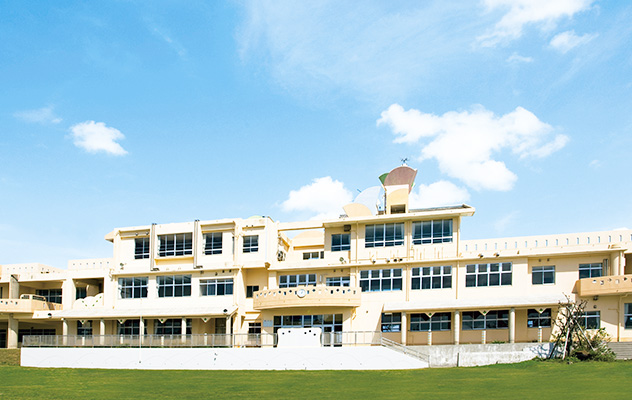

平素は格別のご愛顧を賜り、厚く御礼申し上げます。 当学園は「自由な学び」をモットーに、常に新しい価値の創造に挑戦し続けてまいりました。
変化の激しい現代社会においても、私たちは職員一丸となって、社会に必要とされるスキルを学べることを目指してまいります。 今後とも変わらぬご指導とご鞭撻を賜りますよう、よろしくお願い申し上げます。
芦屋キャンパス長 山田 太郎
N高等学校 芦屋キャンパス
【住所】〒659-0093 兵庫県芦屋市船戸町4-1 ラポルテ本館5F
【アクセス】JR神戸線「芦屋駅」より徒歩1分
動画でご覧になりたい方はこちら→ 学園公式TikTok
キャンパス入学をご希望の方はこちら→ オープンキャンパス近畿地区